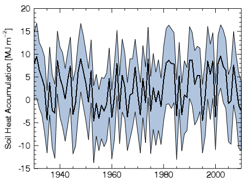

The POLYGON function adds a polygon annotation to an existing IDL Graphic.

The following lines create the plot shown at the right.
data = RANDOMU(s,81)*15-5
upper = data + RANDOMU(s,81)*2 + 6
bottom = data - RANDOMU(s,81)*3 - 7
year = INDGEN(81) + 1930
key = 1942
p = PLOT(year, data, XRANGE=[1930,2010], YRANGE=[-15,20], $
YTITLE='Soil Heat Accumulation [MJ m$^{-2}$]', THICK=2)
poly = POLYGON([year,reverse(year)], [upper,reverse(bottom)], $
[REPLICATE(-0.01,162)], /DATA, /FILL_BACKGROUND, $
FILL_COLOR="light steel blue")
See Annotations Examples for additional examples using the POLYGON function.
graphic = POLYGON( X , Y , [, Z] [, Format] [, Keywords = value ][ Properties = variable ])
Keywords are applied only during the initial creation of the graphic.
[, CONNECTIVITY = array ] [, / DATA ] [, / DEVICE ] [, / NORMAL ] [, TARGET = variable ]
Properties can be set as keywords to the function during creation, or retrieved or changed using the "." notation after creation.
Note: Unlike other keywords in IDL, you cannot use an abbreviated form of the property name when setting them during creation. Instead, you must use the full property name.
ANTIALIAS , CLIP , COLOR , FILL_BACKGROUND , FILL_COLOR , FILL_TRANSPARENCY , HIDE , LINESTYLE , NAME , THICK , TRANSPARENCY , UVALUE , WINDOW
The POLYGON function returns a reference to the created annotation. Use the returned reference to manipulate the annotation after creation by changing properties or by calling methods.
The vertices of the polygon. The vectors X, Y, [and Z] must be of equal length. Unless Z is specified, a 2-D polygon is created.
A string that sets line format properties using short tokens to represent color, linestyle, and thickness values. For example, to create a solid red line with a thickness value of 2, you would use the following:
p = POLYGON(x, y, '-r2')
Tokens in the Format string represent values of the LINESTYLE, COLOR, and THICK properties. From one to three tokens can be present, and the tokens may be in any order. Tokens are case sensitive. For more information about the syntax of the Format argument, see Formatting IDL Graphics Symbols and Lines .
Keywords are applied only during the initial creation of the graphic.
A vector defining individual polygons of the form: [ n , i 0 , i 1 , ..., i n -1 , n , i 0 , i 1 , ..., i n -1 ], where n is the number of vertices that define a polygon, and i 0 ..i n -1 are indices into a polygon vertex list. Connectivity allows you to insert multiple polygons with a single call. All of the polygons will share the same properties.
Set this keyword if the input arguments are specified in data coordinates. Setting this keyword inserts the polygon into the data space, otherwise the polygon is added to the annotation layer.
Set this keyword if values are specified in device coordinates (pixels) for the MARGIN and POSITION properties. (Normalized coordinates are the default for these properties.)
Set this keyword if the input arguments are specified in normalized ( [0, 1] ) coordinates (the default).
Set this keyword to the graphic object to use if points are specified in data coordinates. By default, the current graphic is used.
By default anti-aliasing is used when drawing lines. Set this property to 0 to disable anti-aliasing.
Set this property to 1 to clip portions of the graphic that lie outside of the dataspace range, or to 0 to disable clipping. The default is 1. This property is ignored unless the DATA property is set.
Set this property to a string or RGB vector that specifies the color of the polygon. The default is "black".
A value of 1 fills the area inside the polygon.
Set this property to a string or RGB vector that specifies the fill color inside the polygon.
An integer between 0 and 100 that specifies the percent transparency of the inside of the polygon. The default value is the same as the TRANSPARENCY property.
Set this property to 1 to hide the graphic. Set HIDE to 0 to show the graphic.
Set this property to an integer or string specifying the line style for the outline. The allowed values are:
| Index | String (case insensitive) |
|---|---|
| 0 | 'solid' or '-'(dash) |
| 1 | 'dot' or ':'(colon) |
| 2 | 'dash' or '--' (double dashes) |
| 3 | 'dash dot' or '-.' |
| 4 | 'dash dot dot dot' or '-:' |
| 5 | 'long dash' or '__' (double underscores) |
| 6 | 'none' or ' ' (space) |
A string that specifies the name of the graphic. The name can be used to retrieve the graphic using the brackets array notation. If NAME is not set then a default name is chosen based on the graphic type.
Set this property to a value between 0 and 10 that specifies the thickness of the polygon outline. A thickness of 0 displays a thin hairline on the chosen device. The default value is 1.
An integer between 0 and 100 that specifies the percent transparency of the polygon. The default value is 0.
Set this property to an IDL variable of any data type.
This property retrieves a reference to the WINDOW object which contains the graphic.
| 8.0 | Introduced |
| 8.1 |
Added the UVALUE property The THICK property was changed to accept a value between 0 and 10 Added the following methods: Delete, GetData, SetData |
PLOT , POLYLINE , Using IDL Graphics
POLYGON POLYGON POLYGON POLYGON POLYGON POLYGON POLYGON POLYGON POLYGON POLYGON POLYGON POLYGON POLYGON POLYGON POLYGON POLYGON POLYGON POLYGON POLYGON POLYGON POLYGON POLYGON POLYGON POLYGON POLYGON POLYGON POLYGON POLYGON POLYGON POLYGON POLYGON POLYGON POLYGON POLYGON POLYGON POLYGON POLYGON POLYGON POLYGON POLYGON POLYGON POLYGON POLYGON POLYGON POLYGON POLYGON POLYGON